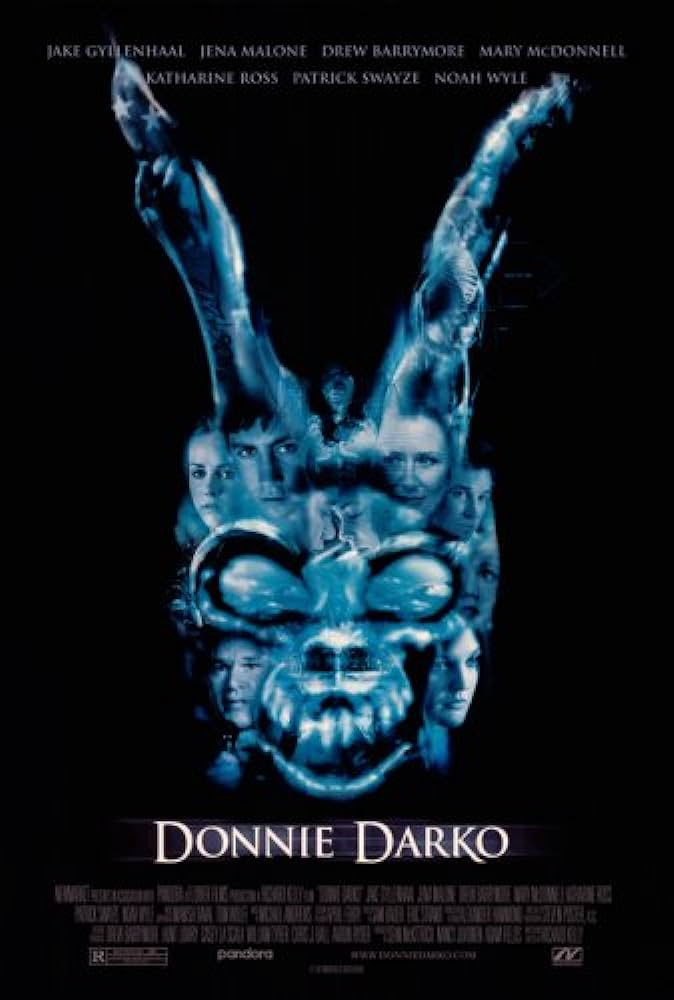

All about the movie Donnie Darko(2001)
28 days, 6 hours, 42 minutes and 12 seconds. That is when the world will end. After a freak accident occurs and Donnie Darko avoids his death. Shortly after, he begins experiencing visions of a man named Frank in a bizarre rabbit suit. Frank begins to instruct Donnie to commit crimes as time ticks down to the end of the world.
Production Company:Flower Films
Release Date:October 26, 2001
Running Time:1hr.53m.
Genres:Thriller, Horror, Drama, Comedy